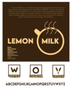
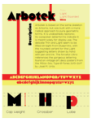

Projects
Dream Con (Concept)
Marketing material concepts created for the 2024 Dream Con anime and gaming convention. The goal was to lean a bit more into the anime aesthetic for these designs so that with a quick glance you have better idea as to what Dream Con is all about. Helping to gain more eyes from its target audience.
/Billboard/DreamCon-Billboard.png)
/Billboard/DreamCon-Billboard-Mockup.png)
/Brochure/Dream%20Con%20Brochure%20(Outside).jpg)
/Brochure/Dream%20Con%20Brochure%20(Inside).jpg)
/Brochure/Dream-Con-Borhucre-Mockup.png)
Shedd Aquarium (Concept)
Marketing materials & new design direction created for the Shedd Aquarium. The goal was to add more easily readable imagery and iconography to the Shedd's already existing brand identity. This added a fun recreational feel to the brand that would attract more people, especially younger ones, to the Shedd to visit and support.
/Monochrome%20Stationary/p2-1&2bc-hv_James-Horizontal-Bevel-Emboss-Business-Card.png)
/Monochrome%20Stationary/p2-1&2bc-hv_James-Vertical-Bevel-Emboss-Business-Card.png)
/Monochrome%20Stationary/p2-3lh_James-Letter-Head.png)
/Monochrome%20Stationary/p2-4en_James-Envelope.png)
/CD%20Case%20and%20Booklet/P14-15_James%20OL-01.jpg)
/CD%20Case%20and%20Booklet/P14-15_James%20OL-06.jpg)
/Colored%20Stationary/P3-Business-Card-OL.png)
/Colored%20Stationary/P3-Letterhead-OL.png)
/Tour%20FLyer/p8-Tour-Flyer-OL-REVISED.png)
/Article/p7-article-fixed-links-OL-REVISED.png)
/Brochure/Shedd%20Brochure%20OL2-01.jpg)
/Brochure/Shedd%20Brochure%20OL2-02.jpg)
/Folder/p6-Folder-Outside.png)
/Folder/p6-Folder-Inside.png)
/Mission%20Statement/Rjames_p13-OL.png)
Yoshi's Dieland (Concept)
These marketing materials & product design were created for a game parodying Nintendo's "Yoshi's Island". It would be a game that crosses the beloved Mario character of Yoshi into somewhat of a John Wick type figure. The goal was to balance this more mature direction with a bright colored almost comic book-like aesthetic. This way, while the content would be a major shift in tone, the product still would have the potential appeal to the sensibilities of those who are already Yoshi or Nintendo fans.
/YOSHI-DIELAND-Switch-Case.png)
/NintendoSwitchYoshiMockUp.jpg)
/Yoshis-Billboard-Mockup.jpg)
Cartoon Cookbook (Concept)
This cook book was designed for a younger demographic with the goal being to get children interested in cooking through their favorite cartoon and video games characters. Many of the patterns and shapes used for the design were inspired by late 80's early 90's pattern designs. This gives the book a fun and freeflowing aesthetic too to help inspire the readers imagination and encourage them to get creative with some of the recipes.
/Cook-Book-Mockup1.png)
/Cook-Book-Mockup2(CROPPED).png)
Typography Posters
Font posters made to educate others abouit certain fonts and typographic language. Each font includes a breif about section and a design that enhances the font in question.
 .png){kind=link}
.png){kind=link}
"We Baby Bears" Cereal (Concept)
This cereal box was designed as a concept for a collaboration between cartoon network and kellogs using “We Baby Bears”. The final design was made to be colorful and be marketed towards a young audience of children would be most liketly to also watch the show. The stars and halftone dots werer used to mimic the shows anime like animation style. The bright blue box is to evoke a sense of trust while being inviting in its whimsical front of the box deisgn.
.png)
.png)
Kirby Japan Postal Stamp
The goal for this project was to create a stamp for a country of choice. So I decided I wanted to use Kirby, a Japanese video game icon, to represent the country on my stamp. The thought was that it'd be a fun idea to reference his power absorbing ability as way to explain him being in a mailman uniform in the design. Using Kirby, a pretty recognizable video game icon who was created in Japan, was used to so that it would attract a video game focused audience. This audience who is not as likely to actually send proper physical mail may still acquire the stamps as collectors items for themselves or using them as stickers ensuring they can be used in different ways.
.png)
Transformation Project
The goal for this project was to take a photograph of myself and create the illusion that I was transforming into something else. I was inspired by the anime “Naruto” to transform myself into a flock of birds much like the character of Itachi.

The Path to Change
A Series of Photos created with the intent to portray different stages of change in a person.
/James_Final1%20(The%20Unkown).jpg)
/James_Final2%20(Struggle).jpg)
/James_Final3%20(Freedom).jpg)
/James_Final4%20(Fear).jpg)
/James_Final5%20(Strength).jpg)
SFX Narrative (CTK 301)
This project called for me to create a narrative using only sound effects, ambient noise, and diagetic sound. It uses many EQing, panning, and layering techniques to achieve the quality of this final product.
Figure Drawing (CTK 380)
These are projects done in my Illinois State figure drawing showing out understanding of anatomy, ability to stylize, and create dynamic compositions.
/Tennessee%20Kid%20Cooper.jpg)
/Law%20&%20Bepo.jpg)